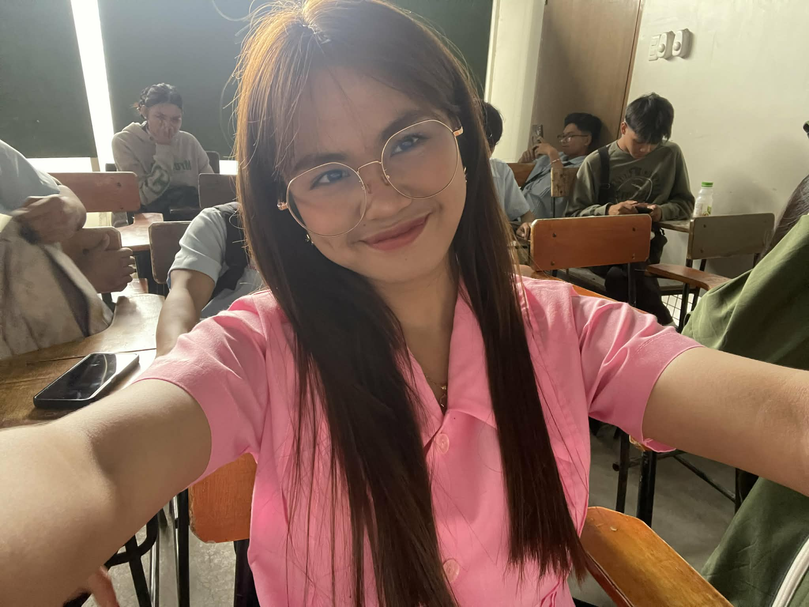
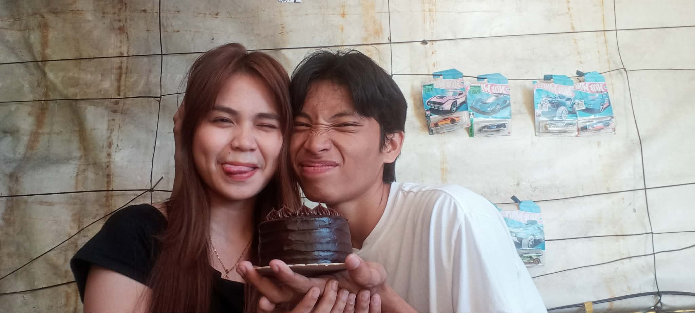
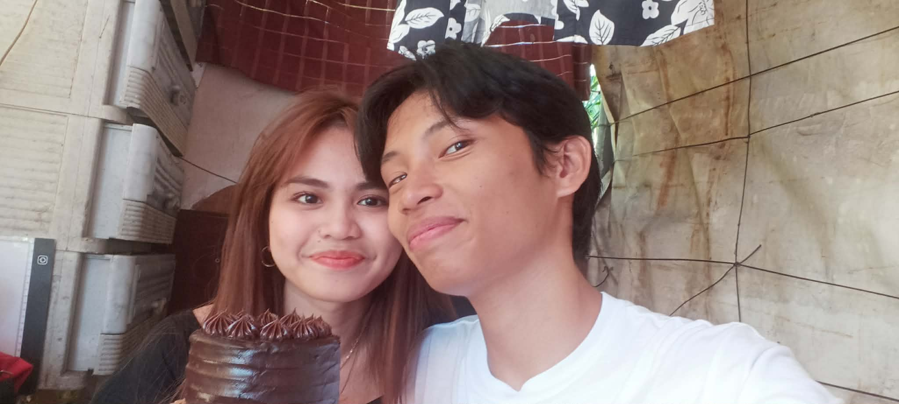
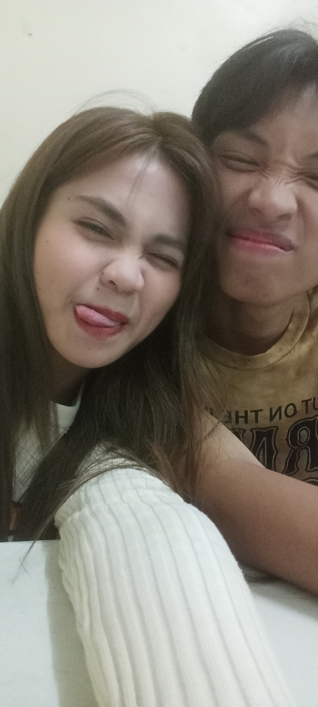

EXHIBIT 01
Your Smile
My favorite kind of sunshine.
A little museum dedicated to the person who somehow became one of the most beautiful parts of my life.
My favorite kind of sunshine.

Nothing ordinary about you.
Something worth protecting.
Some of my favorite things about you aren't necessarily the things everyone notices.

A sound I never get tired of.

Stronger than you realize.

The little things became everything.
If someone asked me to choose one favorite thing about you, I honestly wouldn't know where to start.
It isn't just your smile. It's not just your eyes, your laugh, your personality, or the way you make me feel.
It's the whole collection. Every little part of you that I've gotten to know, the good days, the difficult ones, the silly moments, and everything in between.
And somehow, after all of it...